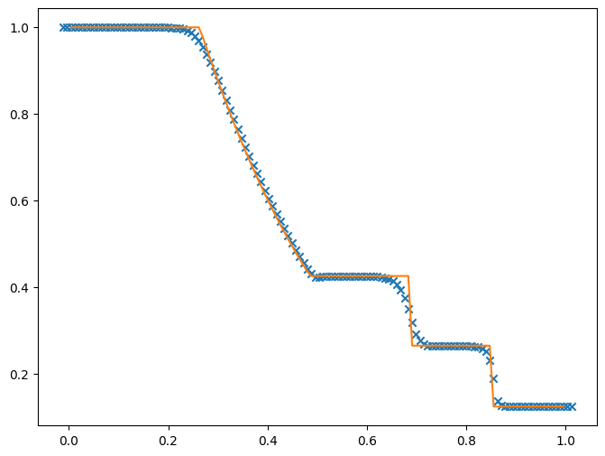

import numpy as npHow To Write A Hydro Code
Michael Zingale
There are many methods for solving the equations of hydrodynamics. We will make some choices right from the start:
We will consider finite-volume methods. These are popular in astrophysics because they are based on the integral form of the conservative equations and properly conserve mass, momentum, and energy.
We will consider an Eulerian grid: the grid is fixed and the fluid moves through it.
We will be explicit in time: the new solution depends only on the previous state.
We will look at a simple 2nd order method-of-lines integration. We do this for simplicity here, and will point out where things are commonly done differently. This scheme has a much simpler spatial reconstruction than methods that do characteristic tracing and relies on an integrator (like a Runge-Kutta method) to advance in time.
We will work in 1-d.
We won’t cover in detail how to write a Riemann solver (that’s a math exercise as much as anything else and beyond the scope of this notebook).
We’ll assume a gamma-law equation of state—this is often not the case in astrophysics.
Much more in-depth details and derivations are given in my hydro notes available online: https://github.com/Open-Astrophysics-Bookshelf/numerical_exercises
For a greater variety of methods, in 2-d, see the pyro code: https://github.com/python-hydro/pyro2 (ref: Harpole et al. JOSS)
Overview
We’ll focus on the Euler equations. In 1-d, these are:
\[\begin{align*} \frac{\partial \rho}{\partial t} + \frac{\partial (\rho u)}{\partial x} & = 0 \\ \frac{\partial (\rho u)}{\partial t} + \frac{\partial (\rho u^2 + p)}{\partial x} &= 0 \\ \frac{\partial (\rho E)}{\partial t} + \frac{\partial (u(\rho E + p))}{\partial x} &= 0 \\ \end{align*}\]
This is a set of (hyperbolic) partial differential equations. To close the system, we need an equation of state, relating the specific internal energy, \(e\), to the pressure: \[ \begin{align*} e &= E - \frac{1}{2}u^2 \\ p &= \rho e ( \gamma - 1 ) \\ \end{align*} \]
To solve these, we need to discretize the equations in both space and time. We’ll use grid-based methods (in addition to the finite-volume method we’ll consider, this can include finite-difference and finite-element methods).
Our system of equations can be expressed in conservative form: \[ \frac{\partial U}{\partial t} + \frac{\partial F(U)}{\partial x} = 0\] where \(U = (\rho, \rho u, \rho E)^\intercal\) and \[ F(U) = \left ( \begin{array}{c} \rho u \\ \rho u^2 + p \\ u (\rho E + p) \end{array} \right )\]
In a finite-volume method, we store the state of the fluid in discrete volumes in space, and we can refer to this discretized state with an index. To see this, we integrate the conservative law system in space over a volume \([x_{i-1/2},x_{i+1/2}]\): \[\frac{\partial \langle U\rangle_i}{\partial t} = - \frac{F_{i+1/2} - F_{i-1/2}}{\Delta x}\]
This is the form of the equations we will solve. Here, \(\langle U\rangle_i\) represents the average state of the fluid in a volume: \[\langle U\rangle_i = \frac{1}{\Delta x} \int_{x_{i-1/2}}^{x_{i+1/2}} U(x) dx\] Visually, we usually think of this grid as:

The state on the grid represents an instance in time. We evolve the state by computing the fluxes through the volumes. These fluxes tell us how much the state changes in each volume over some small timestep, \(\Delta t\).
Our code will have the following structure:
Create our numerical grid
Set the initial conditions
Main timestep evolution loop
Compute the timestep
Loop to advance one step (count depends on the number of stages in the integrator)
Reconstruct the state to interfaces
Solve Riemann problem to find the fluxes through the interface
Do a conservative update of the state to the stage
Output
Grid
We’ll manage our 1-d grid via a class FVGrid. We will divide the domain into a number of zones (or volumes) that will store the state. To implement boundary conditions, we traditionally use ghost cells–extra cells added to each end of the domain. We’ll consider a grid that looks like this:

We’ll use the names lo and hi to refer to the first and last zone in our domain. The domain boundaries are the bold lines shown above, and beyond that, on each end, we have ghost cells.
The main information we need to setup the grid are the number of zones in the interior and the number of ghost cells.
To make life easier, we’ll have a simple class with indices that we use to index the fluid state arrays. We can pass this around and be sure that we are always accessing the correct fluid state.
class FluidVars:
"""A simple container that holds the integer indicies we will use to
refer to the different fluid components"""
def __init__(self, gamma=1.4, C=0.8):
self.nvar = 3
# conserved variables
self.urho = 0
self.umx = 1
self.uener = 2
# primitive variables
self.qrho = 0
self.qu = 1
self.qp = 2
# EOS gamma
self.gamma = gamma
# CFL number
self.C = CThis is the main class for managing the finite-volume grid. In addition to holding coordinate information and knowing the bounds of the domain, it also can fill the ghost cells and give you a scratch array that lives on the same grid.
class FVGrid:
"""The main finite-volume grid class for holding our fluid state."""
def __init__(self, nx, ng, xmin=0.0, xmax=1.0):
self.xmin = xmin
self.xmax = xmax
self.ng = ng
self.nx = nx
self.lo = ng
self.hi = ng+nx-1
# physical coords -- cell-centered
self.dx = (xmax - xmin)/(nx)
self.x = xmin + (np.arange(nx+2*ng)-ng+0.5)*self.dx
def scratch_array(self, nc=1):
""" return a scratch array dimensioned for our grid """
return np.squeeze(np.zeros((self.nx+2*self.ng, nc), dtype=np.float64))
def fill_BCs(self, atmp):
""" fill all ghost cells with zero-gradient boundary conditions """
if atmp.ndim == 2:
for n in range(atmp.shape[-1]):
atmp[0:self.lo, n] = atmp[self.lo, n]
atmp[self.hi+1:, n] = atmp[self.hi, n]
else:
atmp[0:self.lo] = atmp[self.lo]
atmp[self.hi+1:] = atmp[self.hi]Reconstruction
We need to use the cell-averages to figure out what the fluid state is on the interfaces. We’ll reconstruct the cell-averages as piecewise lines that give us the same average in the zone. We then follow these lines to the interfaces to define the left and right state at each interface.
Usually we work in terms of the primitive variables, \(q = (\rho, u, p)\). So we first write a routine to do the algebraic transformation from conservative to primitive variables: \[ \begin{align} \rho &= \rho \\ u &= \frac{(\rho u)}{\rho} \\ p &= \left ( (\rho E) - \frac{1}{2} \frac{(\rho u)^2}{\rho}\right )(\gamma - 1) \end{align} \]
def cons_to_prim(grid, U):
"""take a conservative state U and return the corresponding primitive
variable state as a new array."""
v = FluidVars()
q = grid.scratch_array(nc=v.nvar)
q[:, v.qrho] = U[:, v.urho]
q[:, v.qu] = U[:, v.umx]/U[:, v.urho]
rhoe = U[:, v.uener] - 0.5*q[:, v.qrho]*q[:, v.qu]**2
q[:, v.qp] = rhoe*(v.gamma - 1.0)
return qNext we need a routine to create the interface states. Here’s well construct a slope for each zone, \(\Delta q\) based on the average state in the neighboring zones. This gives us a line representing the value of the fluid state as a function of position in each zone: \[q_i(x) = \langle q\rangle_i + \frac{\Delta q_i}{\Delta x} (x - x_i)\]
Note that there is a unique \(q_i(x)\) for each zone—this is usually called piecewise linear reconstruction. By design, the average of \(q_i(x)\) over the zone is the cell-average, so it is conservative.
We use this equation for a line to find the fluid state right at the interface. For zone \(i\), the line \(q_i(x)\) gives you the right state on the left interface, \(q_{i-1/2,R}\), and the left state on the right interface, \(q_{i+1/2,L}\). Visually this looks like:

There’s one additional wrinkle—2nd order codes tend to produce oscillations near discontinuities, so we usually need to limit the slopes, \(\Delta q_i\), so we don’t introduce new minima or maxima in the evolution. We’ll use the minmod limiter: \[ \begin{equation} \left . \frac{\partial a}{\partial x} \right |_i = \mathtt{minmod} \left ( \frac{a_i - a_{i-1}}{\Delta x}, \frac{a_{i+1} - a_i}{\Delta x} \right ) \end{equation} \] with \[ \begin{equation} \mathtt{minmod}(a,b) = \left \{ \begin{array}{ll} a & \mathit{if~} |a| < |b| \mathrm{~and~} a\cdot b > 0 \\ b & \mathit{if~} |b| < |a| \mathrm{~and~} a\cdot b > 0 \\ 0 & \mathit{otherwise} \end{array} \right . \end{equation} \]
def states(grid, U):
v = FluidVars()
q = cons_to_prim(grid, U)
# construct the slopes
dq = grid.scratch_array(nc=v.nvar)
for n in range(v.nvar):
dl = grid.scratch_array()
dr = grid.scratch_array()
dl[grid.lo-1:grid.hi+2] = q[grid.lo:grid.hi+3,n] - q[grid.lo-1:grid.hi+2,n]
dr[grid.lo-1:grid.hi+2] = q[grid.lo-1:grid.hi+2,n] - q[grid.lo-2:grid.hi+1,n]
# these where's do a minmod()
d1 = np.where(np.fabs(dl) < np.fabs(dr), dl, dr)
dq[:, n] = np.where(dl*dr > 0.0, d1, 0.0)
# now make the states
q_l = grid.scratch_array(nc=v.nvar)
q_l[grid.lo:grid.hi+2, :] = q[grid.lo-1:grid.hi+1, :] + 0.5*dq[grid.lo-1:grid.hi+1, :]
q_r = grid.scratch_array(nc=v.nvar)
q_r[grid.lo:grid.hi+2, :] = q[grid.lo:grid.hi+2, :] - 0.5*dq[grid.lo:grid.hi+2, :]
return q_l, q_rRiemann problem and conservative update
After doing our reconstruction, we are left with a left and right state on an interface. To find the unique fluid state on the interface, we solve a Riemann problem, \[q_{i+1/2} = \mathcal{R}(q_{i+1/2,L},q_{i+1/2,R})\]
We could spend an entire day talking about how to solve the Riemann problem. Well just summarize things here.
At each interface, we have a left and right state. Information about the jump across this interface will be carried away from the interface by the 3 hydrodynamic waves (\(u\) and \(u\pm c\)).
 The solution to the Riemann problem that we need is the state on the interface–with that we can evaluate the flux through the interface.
The solution to the Riemann problem that we need is the state on the interface–with that we can evaluate the flux through the interface.
To solve the Riemann problem, we need to know how much each variable changes across each of the three waves. To complicate matters, the left and right waves can be either shocks or rarefactions. The middle wave (\(u\)) is always a contact discontinuity (and of our primitive variables, only \(\rho\) jumps across it).
For a gamma-law gas, we can write down analytic expressions for the change in the primitive variables across both a rarefaction and shock. We can then solve these to find the state inbetween the left and right waves (the star state) and then compute the wave speeds.
Finally, we can find the solution on the interface by determining which region we are in.

We’ll use an exact Riemann solver to find the solution on the interface. There a lot of algebra involved in finding the expressions for the jumps across the waves and the wave speeds, which we’ll skip (by see my notes). Instead we’ll just use this solver to give us the state.
One we have the interface state, we can compute the fluxes using this state:
def cons_flux(state, v):
""" given an interface state, return the conservative flux"""
flux = np.zeros((v.nvar), dtype=np.float64)
flux[v.urho] = state.rho * state.u
flux[v.umx] = flux[v.urho] * state.u + state.p
flux[v.uener] = (0.5 * state.rho * state.u**2 +
state.p/(v.gamma - 1.0) + state.p) * state.u
return fluximport riemann_exact as re
help(re)Help on module riemann_exact:
NAME
riemann_exact
DESCRIPTION
An exact Riemann solver for the Euler equations with a gamma-law
gas. The left and right states are stored as State objects. We then
create a RiemannProblem object with the left and right state:
> rp = RiemannProblem(left_state, right_state)
Next we solve for the star state:
> rp.find_star_state()
Finally, we sample the solution to find the interface state, which
is returned as a State object:
> q_int = rp.sample_solution()
CLASSES
builtins.object
RiemannProblem
State
class RiemannProblem(builtins.object)
| RiemannProblem(left_state, right_state, gamma=1.4)
|
| a class to define a Riemann problem. It takes a left
| and right state. Note: we assume a constant gamma
|
| Methods defined here:
|
| __init__(self, left_state, right_state, gamma=1.4)
| Initialize self. See help(type(self)) for accurate signature.
|
| find_star_state(self, p_min=0.001, p_max=1000.0)
| root find the Hugoniot curve to find ustar, pstar
|
| rarefaction_solution(self, sgn, state)
| return the interface solution considering a rarefaction wave
|
| sample_solution(self)
| given the star state (ustar, pstar), find the state on the interface
|
| shock_solution(self, sgn, state)
| return the interface solution considering a shock
|
| u_hugoniot(self, p, side)
| define the Hugoniot curve, u(p).
|
| ----------------------------------------------------------------------
| Data descriptors defined here:
|
| __dict__
| dictionary for instance variables
|
| __weakref__
| list of weak references to the object
class State(builtins.object)
| State(p=1.0, u=0.0, rho=1.0)
|
| a simple object to hold a primitive variable state
|
| Methods defined here:
|
| __init__(self, p=1.0, u=0.0, rho=1.0)
| Initialize self. See help(type(self)) for accurate signature.
|
| __str__(self)
| Return str(self).
|
| ----------------------------------------------------------------------
| Data descriptors defined here:
|
| __dict__
| dictionary for instance variables
|
| __weakref__
| list of weak references to the object
FUNCTIONS
cons_flux(state, v)
given an interface state, return the conservative flux
FILE
/Users/tabel/Library/Mobile Documents/com~apple~CloudDocs/Teaching/360/tutorials/riemann_exact.py
For a method-of-lines approach, we want to just compute the righthand side, \(A = -\partial F/\partial x\). Then we will turn our PDE into an ODE for time: \[\frac{\partial \langle U\rangle_i}{\partial t} = -A_i = - \frac{F_{i+1/2} - F_{i-1/2}}{\Delta x}\]
We can then use any ODE integration method, like Runge-Kutta to solve the system.
This routine will take the conserved state, \(U\), construct the left and right states at all interfaces, solve the Riemann problem to get the unique state on the boundary, and then compute the advective term and return it.
def make_flux_divergence(grid, U):
v = FluidVars()
# get the states
q_l, q_r = states(grid, U)
# now solve the Riemann problem
flux = grid.scratch_array(nc=v.nvar)
for i in range(grid.lo, grid.hi+2):
sl = re.State(rho=q_l[i,v.qrho], u=q_l[i,v.qu], p=q_l[i,v.qp])
sr = re.State(rho=q_r[i,v.qrho], u=q_r[i,v.qu], p=q_r[i,v.qp])
rp = re.RiemannProblem(sl, sr, gamma=v.gamma)
rp.find_star_state()
q_int = rp.sample_solution()
flux[i, :] = cons_flux(q_int, v)
A = grid.scratch_array(nc=v.nvar)
for n in range(v.nvar):
A[grid.lo:grid.hi+1, n] = (flux[grid.lo:grid.hi+1, n] -
flux[grid.lo+1:grid.hi+2, n])/grid.dx
return ATimestep
Explicit hydro codes have a restriction on the size of the timestep. We cannot allow information to move more than one zone per step. For the hydro equations, the speeds at which information travels are \(u\) and \(u \pm c\), so we use the largest speed here to compute the timestep.
def timestep(grid, U):
v = FluidVars()
# compute the sound speed
q = cons_to_prim(grid, U)
c = grid.scratch_array()
c[grid.lo:grid.hi+1] = np.sqrt(v.gamma *
q[grid.lo:grid.hi+1,v.qp] /
q[grid.lo:grid.hi+1,v.qrho])
dt = v.C * grid.dx / (np.abs(q[grid.lo:grid.hi+1, v.qu]) +
c[grid.lo:grid.hi+1]).max()
return dtMain driver
This is the main driver. For simplicity, I’ve hardcoded the initial conditions here for the standard Sod problem. Usually those would be a separate routine.
This does 2nd-order RK (or Euler’s method) for the integration, and requires that we compute the advection terms twice to advance the solution by \(\Delta t\). The update looks like: \[ \begin{align*} U^\star &= U^n + \frac{\Delta t}{2} A(U^n) \\ U^{n+1} &= U^n + \Delta t A(U^\star) \end{align*} \]
def mol_solve(nx, tmax=1.0, init_cond=None):
"""Perform 2nd order MOL integration of the Euler equations.
You need to pass in a function foo(grid) that returns the
initial conserved fluid state."""
grid = FVGrid(nx, 2)
v = FluidVars()
U = init_cond(grid)
t = 0.0
while t < tmax:
dt = timestep(grid, U)
if t + dt > tmax:
dt = tmax - t
grid.fill_BCs(U)
k1 = make_flux_divergence(grid, U)
U_tmp = grid.scratch_array(nc=v.nvar)
for n in range(v.nvar):
U_tmp[:, n] = U[:, n] + 0.5 * dt * k1[:, n]
grid.fill_BCs(U_tmp)
k2 = make_flux_divergence(grid, U_tmp)
for n in range(v.nvar):
U[:, n] += dt * k2[:, n]
t += dt
return grid, UExample: Sod’s problem
The Sod problem is a standard test problem, consisting of a left and right state separated by an initial discontinuity. As time evolves, a rightward moving shock and contact and leftward moving rarefaction form.
One reason this problem is so popular is that you can find the exact solution (it’s just the Riemann problem) and compare the performance of your code to the exact solution.
def sod(grid):
v = FluidVars()
U = grid.scratch_array(nc=v.nvar)
# setup initial conditions -- this is Sod's problem
rho_l = 1.0
u_l = 0.0
p_l = 1.0
rho_r = 0.125
u_r = 0.0
p_r = 0.1
idx_l = grid.x < 0.5
idx_r = grid.x >= 0.5
U[idx_l, v.urho] = rho_l
U[idx_l, v.umx] = rho_l * u_l
U[idx_l, v.uener] = p_l/(v.gamma - 1.0) + 0.5 * rho_l * u_l**2
U[idx_r, v.urho] = rho_r
U[idx_r, v.umx] = rho_r * u_r
U[idx_r, v.uener] = p_r/(v.gamma - 1.0) + 0.5 * rho_r * u_r**2
return Ug, U = mol_solve(128, tmax=0.2, init_cond=sod)import matplotlib.pyplot as plt
plt.rcParams['figure.dpi'] = 100
plt.rcParams['figure.figsize'] = [8, 6]sod = np.genfromtxt("sod-exact.out", skip_header=2, names=True)v = FluidVars()
plt.scatter(g.x, U[:,v.urho], marker="x", color="C0")
plt.plot(sod["x"], sod["rho"], color="C1")
Exercises
Run the problem without limiting the slopes to see how it compares
Try a higher-order Runge-Kutta time integration methods to see how the problem changes
Implement periodic boundary conditions and create a new set of initial conditions that just puts a low amplitude Gaussian pulse—this will create an acoustic wave that propagates through the domain.